Die Eucharistie durch die Jahrhunderte
Wischen Sie nach links oder rechts und navigieren Sie durch die Jahrhunderte.
Klicken Sie auf das PDF-Symbol, um die Original-Scans der Buchzitate anzusehen.
Noch keine direkten Zitate über die Eucharistie im 1. Jahrhundert vorhanden. Schauen Sie sich die übrigen Jahrhunderten an!
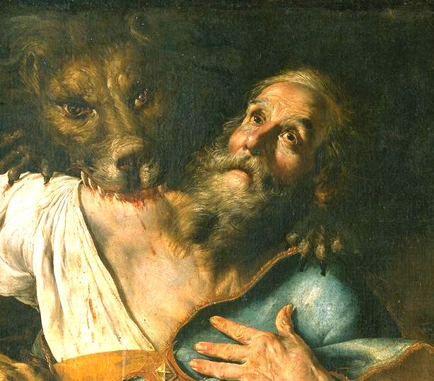
"Lasse sich niemand täuschen! Auch die himmlischen Mächte, die Herrlichkeit der Engel und die sichtbaren wie unsichtbaren Herrscher - wenn sie nicht an das Blut Christi glauben, kommt auch über sie das Gericht. Denn das Ganze ist Glaube und Liebe, die von nichts übertroffen werden."
"Von Eucharistie und Gebet halten sie sich fern, weil sie nicht bekennen, dass die Eucharistie das Fleisch unseres Erlösers Jesus Christus ist, das für unsere Sünden gelitten, das der Vater in seiner Güte auferweckt hat. Die sich nun der Gabe Gottes widersetzen, sterben an ihrem Streiten."
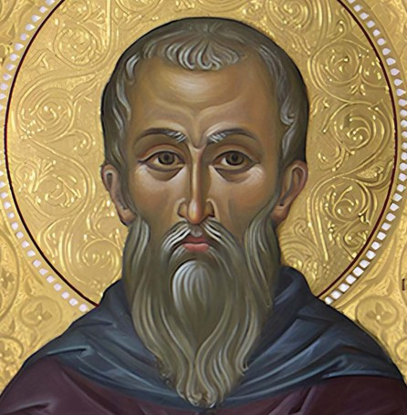
"Diese Nahrung heißt bei uns Eucharistie. Niemand darf daran teilnehmen, als wer unsere Lehren für wahr hält, das Bad zur Nachlassung der Sünden und zur Wiedergeburt empfangen hat und nach den Weisungen Christi lebt. Denn nicht als gemeines Brot und als gemeinen Trank nehmen wir sie; sondern wie Jesus Christus, unser Erlöser, als er durch Gottes Logos Fleisch wurde, Fleisch und Blut um unseres Heiles willen angenommen hat, so sind wir belehrt worden, dass die durch ein Gebet um den Logos, der von ihm ausgeht, unter Danksagung geweihte Nahrung, mit der unser Fleisch und Blut durch Umwandlung genährt wird, Fleisch und Blut jenes fleischgewordenen Jesus sei."
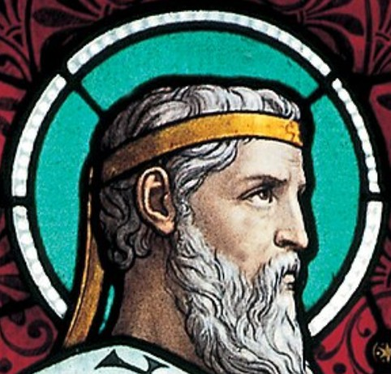
"Täricht in jeder Hinsicht sind die, welche die gesamte Anordnung Gottes verachten, die Heiligung des Fleisches leugnen und seine Wiedergeburt verwerfen, indem sie behaupten, dass es der Unvergänglichkeit nicht fähig sei. Wird aber dies nicht erlöst, dann hat uns der Herr auch nicht mit seinem Blutte erlöst, noch ist der eucharistische Kelch die Teilnahme an seinem Blutte, das Brot, das wir brechen, die Teilnahme an seinem Leibe?."
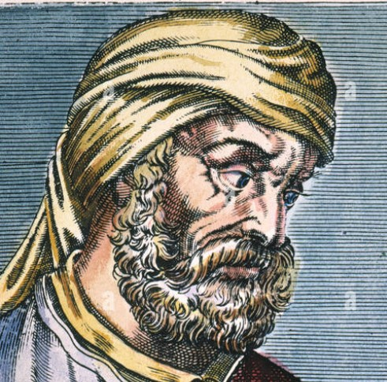
"Der Leib genießt das Fleisch und das Blut Christi, damit die Seele aus Gott genährt werde."
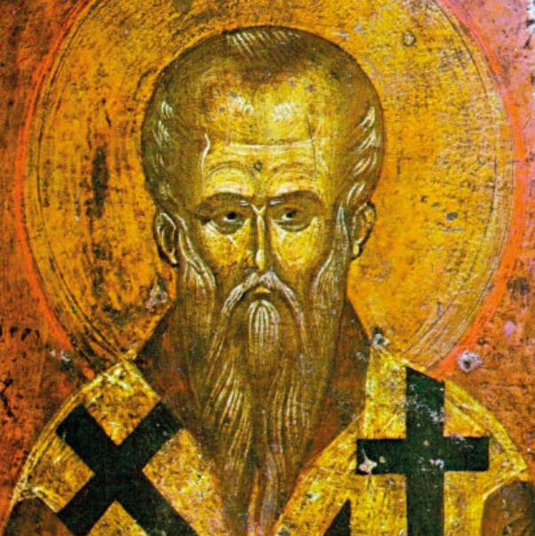
"Der Logos wird alles für das Kind, Vater und Mutter und Erzieher und Ernährer. 'Esset mein Fleisch', so steht geschrieben, 'und trinkt mein Blut!' Diese für uns geeignete Nahrung spendet der Herr, und Er reicht sein Fleisch dar und vergießt sein Blut."
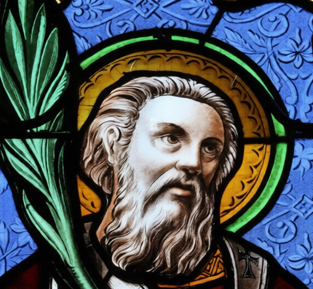
"„Und sie hat ihren Tisch ausgestattet:“ dies bezeichnet die verheißene Erkenntnis der Heiligen Dreifaltigkeit; es bezieht sich auch auf seinen geehrten und unbefleckten Leib und sein Blut, welche Tag für Tag am geistlichen göttlichen Tisch verwaltet und opferhaft dargebracht werden, als ein Gedächtnis jenes ersten und immer-denkwürdigen Tisches des geistlichen göttlichen Mahles."
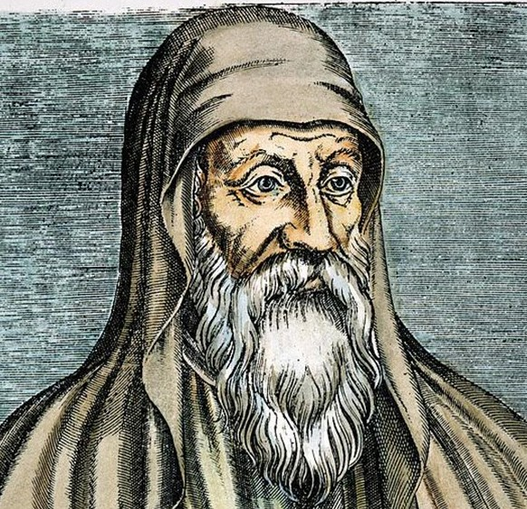
"Früher war „im Rätsel“ (andeutungsweise) die Taufe „in der Wolke und im Meer“, nun aber ist „in sichtbarer Gestalt“ die Wiedergeburt in Wasser und Heiligem Geist. Damals war „im Rätsel“ das Manna die Speise, nun aber ist „in sichtbarer Gestalt“ das Fleisch des Wortes Gottes die wahre Speise, so wie er selbst sagt: „Denn mein Fleisch ist wahrhaft Speise und mein Blut ist wahrhaft Trank“."
"Ein jeder also, wie er es in seinem Herzen verstanden hat.“ Seht zu, ob ihr versteht, seht zu, ob ihr es festhaltet, damit nicht etwa das Gesagte vergeht und zu nichts wird. Ich wünsche euch mit Beispielen aus euren religiösen Übungen zu ermahnen. Ihr, die ihr gewohnt seid, an den göttlichen Mysterien teilzunehmen, wisst, wenn ihr den Leib des Herrn empfangt, mit welcher Vorsicht und Verehrung ihr ihn schützt, damit nicht irgendein kleines Teilchen davon herabfalle, damit nichts von der konsekrierten Gabe verloren gehe. Denn ihr glaubt – und mit Recht –, dass ihr verantwortlich seid, wenn durch Nachlässigkeit etwas davon herabfällt. Wenn ihr aber so sorgfältig bemüht seid, seinen Leib zu bewahren, und das mit Recht, wie meint ihr dann, dass es eine geringere Schuld sei, das Wort Gottes vernachlässigt zu haben, als seinen Leib vernachlässigt zu haben?
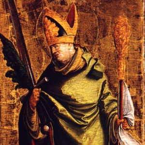
"Die todbringenden Speisen der Götzen stoßen ihnen fast noch auf, aber während noch ihr Schlund sein Verbrechen durch den Atem und die unheilvolle Befleckung durch den Geruch verrät, wagen sie sich an den Leib des Herrn. Und doch tritt ihnen die göttliche Schrift entgegen und ruft und sagt: „Jeder Reine soll von dem Fleische essen, und jede Seele, die von dem Fleische des Heilsopfers ißt, das dem Herrn zugehört, und hat eine Unreinigkeit an sich, diese Seele soll aus ihrem Volke verschwinden“, und auch der Apostel bezeugt und sagt: „Ihr könnt nicht den Kelch des Herrn trinken und den Kelch der bösen Geister; ihr könnt nicht am Tische des Herrn teilhaben und am Tische der bösen Geister.“"
"Ohne jedoch auf dies alles zu achten und zu merken, bevor man noch den Frevel gesühnt und das Verbrechen offen eingestanden hat, ehe noch das Gewissen durch das Opfer und die Hand des Priesters gereinigt und der Groll des empörten und drohenden Herrn versöhnt ist, tut man seinem Leibe und Blute Gewalt an, und sie vergehen sich jetzt an dem Herrn mit Hand und Mund noch mehr als damals, als sie den Herrn verleugneten."
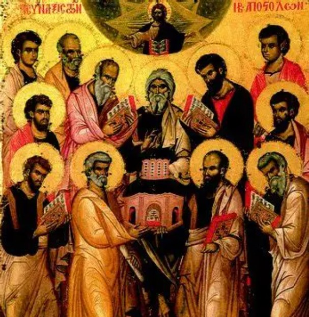
"Wenn ein Bischof oder Priester oder Diakon oder ein im Priesterverzeichniß Stehender nach vollzogenem Opfer nicht communicirt, so soll er den Grund davon angeben. Ist der Grund vernünftig, soll er Verzeihung erlangen; wenn er es aber nicht sagt, so soll er exkommunizirt werden, weil er Ursächer einer Schädigung des Volkes ist."
"Alle Gläubigen, welche in die hl. Kirche Gottes gehen und die hl. Schriften anhören, aber nicht beim Dankagungsgebet (Kanon) und der hl. Kommunion bleiben, sollen, weil in die Kirche Unordnung bringend, exkommunizirt werden."
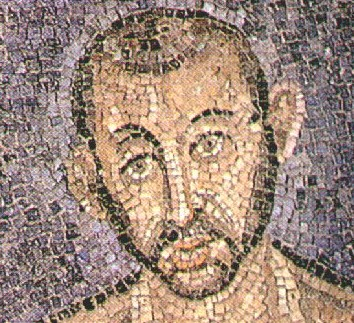
Wenn es das tägliche Brot ist, warum nimmst du es nur einmal im Jahr, wie es die Griechen im Osten zu tun pflegen? Nimm täglich, was dir täglich zum Heil gereicht. Lebe so, dass du würdig bist, es täglich zu empfangen. Wer nicht würdig ist, es täglich zu empfangen, ist auch nicht würdig, es einmal im Jahr zu empfangen. So brachte der heilige Hiob täglich ein Opfer für seine Söhne dar, damit sie nicht vielleicht in Gedanken oder Worten gesündigt hätten. Darum hörst du, dass sooft das Opfer dargebracht wird, der Tod des Herrn, die Auferstehung des Herrn, die Himmelfahrt des Herrn und die Vergebung der Sünden vergegenwärtigt werden – und du nimmst dieses Brot des Lebens nicht täglich? Wer eine Wunde hat, braucht ein Heilmittel. Die Wunde ist, dass wir unter der Sünde stehen; das Heilmittel ist das himmlische und ehrwürdige Sakrament.
„Unser tägliches Brot gib uns heute.“ Wenn du täglich empfängst, dann ist für dich „heute“ gleichbedeutend mit „täglich“. Wenn Christus für dich „heute“ ist, dann steht er für dich auch täglich wieder auf. Wie das? „Du bist mein Sohn, heute habe ich dich gezeugt.“ Darum ist „heute“ der Tag, an dem Christus aufersteht. Gestern und heute ist er derselbe, sagt der Apostel Paulus. An anderer Stelle aber sagt er: „Die Nacht ist vorgerückt, der Tag ist nahe.“ Die vergangene Nacht ist vorüber, der gegenwärtige Tag ist angebrochen.
So steht nachweislich fest, dass die Sakramente der Kirche älter sind. Jetzt erkenne ihre größere Vorzüglichkeit. Wahrhaft etwas Wunderbares ward der Mannaregen, den Gott den Vätern spendete, und die tägliche Himmelsspeise, mit der sie gesättigt wurden. Daher das Wort: „Das Brot der Engel aß der Mensch.“ Doch gleichwohl sind alle, die jenes Brot aßen, in der Wüste gestorben. Diese Speise aber, die du empfängst, dieses „lebendige Brot, das vom Himmel gekommen“, verleiht die Substanz des ewigen Lebens, und wer immer dieses Brot isst, wird nicht sterben in Ewigkeit. Es ist der Leib Christi.
So steht nachweislich fest, dass die Sakramente der Kirche älter sind. Jetzt erkenne ihre größere Vorzüglichkeit. Wahrhaft etwas Wunderbares ward der Mannaregen, den Gott den Vätern spendete, und die tägliche Himmelsspeise, mit der sie gesättigt wurden. Daher das Wort: „Das Brot der Engel aß der Mensch.“ Doch gleichwohl sind alle, die jenes Brot aßen, in der Wüste gestorben. Diese Speise aber, die du empfängst, dieses „lebendige Brot, das vom Himmel gekommen“, verleiht die Substanz des ewigen Lebens, und wer immer dieses Brot isst, wird nicht sterben in Ewigkeit. Es ist der Leib Christi.
Der Herr Jesus selbst versichert mit lauter Stimme: „Das ist mein Leib.“ Vor den himmlischen Segensworten heißt die Wesenheit anders, nach der Konsekration wird sie als „Leib“ bezeichnet. Er selbst spricht von seinem Blut. Vor der Konsekration heißt es anders, nach der Konsekration wird es „Blut“ genannt. Und du sprichst „Amen“, das heißt „wahr ist‘s“. Was der Mund spricht, soll der Geist innerlich bekennen; was das Wort tönt, soll das Herz fühlen.
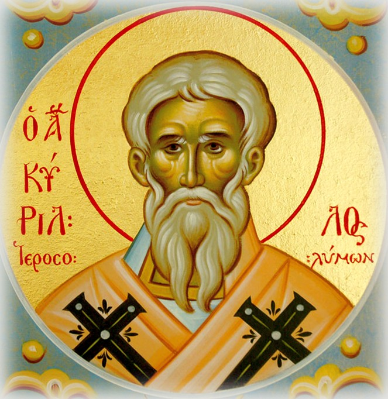
Auch das, was in Götzentempeln und auf festlichen Märkten aufgehängt ist, sei es Fleisch oder Brot oder anderes dergleichen, gehört, weil durch Anrufung der unreinen Dämonen beschmutzt, zum Pompe des Teufels. Gleichwie nämlich das Brot und der Wein der Eucharistie vor der Anrufung der heiligen, anbetungswürdigen Dreifaltigkeit gewöhnliches Brot und gewöhnlicher Wein ist, nach der Anrufung aber das Brot zum Leibe Christi und der Wein zum Blute Christi wird, ebenso werden solche Eßwaren vom Pompe des Satans, obwohl sie von Natur aus gewöhnliche Dinge sind, durch die Anrufung der Dämonen unrein.
Doch darfst du ja nicht meinen, jene Salbe sei nur Salbe. Denn gleichwie das Brot der Eucharistie nach der Anrufung des Hl. Geistes nicht mehr gewöhnliches Brot ist, sondern der Leib Christi, so ist diese heilige Salbe nach der Anrufung nicht mehr einfache Salbe und nicht, wie man sagen möchte, gemein, vielmehr ist sie Gnade Christi und wirkt durch die Gegenwart von Christi Gottheit den Hl. Geist.
Lesung aus dem Briefe Pauli an die Korinther: „Ich habe von dem Herrn empfangen, was ich auch euch überliefert habe usw.“ Schon diese Lehre des heiligen Paulus genügt, euch von der Wahrheit der göttlichen Geheimnisse völlig zu überzeugen, durch welche ihr gewürdigt wurdet, ein Leib und ein Blut mit Christus zu werden. Soeben rief euch nämlich Paulus zu: „In der Nacht, da unser Herr Jesus Christus verraten wurde, nahm er Brot, dankte, brach es und gab es seinen Jüngern mit den Worten: nehmet hin und esset, das ist mein Leib! Und er nahm den Kelch, dankte und sprach: nehmet hin und trinket, das ist mein Blut!“
Wenn Jesus einst zu Kana in Galiläa durch seinen Wink Wasser in Wein verwandelt hat, soll ihm dann nicht zuzutrauen sein, daß er Wein in Blut verwandelt hat? Wenn Jesus, zu irdischer Hochzeit geladen, dieses seltsame Wunder gewirkt hat, soll man dann nicht noch viel mehr zugeben, daß er den Sohn des Brautgemaches seinen Leib und sein Blut zum Genusse dargeboten hat?
Aus voller Glaubensüberzeugung wollen wir also am Leibe und Blute Christi teilnehmen! In der Gestalt des Brotes wird dir nämlich der Leib gegeben, und in der Gestalt des Weines wird dir das Blut gereicht, damit du durch den Empfang des Leibes und Blutes Christi ein Leib und ein Blut mit ihm werdest. Durch diesen Empfang werden wir Christusträger; denn sein Fleisch und sein Blut kommt in unsere Glieder.
In einem Disput mit den Juden sagte Christus einmal: „Wenn ihr mein Fleisch nicht esset und mein Blut nicht trinket, habt ihr das Leben nicht in euch.“
Im Alten Bunde hatte man Schaubrote. Doch diese Brote des Alten Bundes hatten ein Ende. Im Neuen Bunde aber gibt es ein himmlisches Brot und einen Kelch des Heiles; sie heiligen Seele und Leib.
Betrachte daher Brot und Wein nicht als rein irdische Dinge! Denn nach der Versicherung des Herrn sind sie Leib und Blut Christi. Wenn dich auch die Sinne hier im Stiche lassen: der Glaube möge dir Festigkeit geben!
Derselige David deutet dir die Kraft von Brot und Wein an, wenn er sagt: „Du hast vor meinen Augen den Tisch gedeckt gegenüber denen, welche mich bedrängen.“ Der Sinn der Worte ist: „Ehe du erschienen bist, hatten die Dämonen den Menschen den Tisch gedeckt, und zwar einen schmutzigen, unreinen, reich an teuflischer Macht. Nach dem du aber erschienen bist, o Herr, hast du vor meinen Augen den Tisch gedeckt.“ Wenn der Mensch zu Gott spricht: „Du hast vor meinen Augen den Tisch gedeckt“, was meint er darunter anders als den mystischen, geistigen Tisch, welchen uns Gott gedeckt hat gegenüber den Dämonen, d. h. zum Kampfe gegen die Dämonen? Und so ist es in der Tat. Denn während jener Tisch die Gemeinschaft mit den Dämonen verlieh, verleiht dieser die Gemeinschaft mit Gott.
„Mit Öl hast du mein Haupt gesalbt.“ Mit Öl hat er die Stirne deines Hauptes gesalbt, damit Gott dich besiegle und du „ein Ausdruck der Besiegelung, ein Heiligtum Gottes“ werdest.
Nachdem wir uns durch diese geistigen Lobgesänge geheiligt haben, rufen wir die Barmherzigkeit Gottes an, daß er den Hl. Geist auf die Opfergaben herabsende, um das Brot zum Leibe Christi, den Wein zum Blute Christi zu machen. Denn was der Hl. Geist berührt, ist völlig geheiligt und verwandelt.
Alsdann hört ihr, wie der Psalmensänger euch mit göttlicher Melodie zur Teilnahme an den heiligen Geheimnissen einlädt und spricht: „Kostet und sehet, daß süß der Herr ist!“ Urteilet nicht nach dem Gaumen, sondern nach dem festen Glauben! Denn wer zum Mahle kommt, der wird nicht eingeladen, Brot und Wein zu kosten, sondern das Abbild des Leibes und Blutes Christi.
Trittst du vor, dann darfst du nicht die Hände flach ausstrecken und nicht die Finger spreizen. Da die rechte Hand den Leib zu empfangen hat, mache die linke Hand zum Throne für denselben! Nimm den Leib Christi mit hohler Hand entgegen und erwidere: Amen! Berühre behutsam mit dem heiligen Leibe deine Augen, um sie zu heiligen! Dann genieße ihn, doch habe acht, daß dir nichts davon auf den Boden falle! Was du davon fallen ließest, wäre natürlich so viel als Verlust eines deiner eigenen Glieder.
Nach der Kommunion des Leibes Christi gehe auch zum Kelch des Blutes, nicht jedoch mit ausgestreckten Händen! Verbeuge dich, sprich zur Anbetung und Verehrung das Amen und genieße, um dich zu heiligen, auch vom Blute Christi! So lange noch Feuchtigkeit auf deinen Lippen ist, berühre sie mit den Fingern und heilige (mit jener Feuchtigkeit) Augen, Stirne und die übrigen Sinne! Alsdann warte das Gebet ab, um Gott zu danken, da er dich solcher Geheimnisse gewürdigt hat!
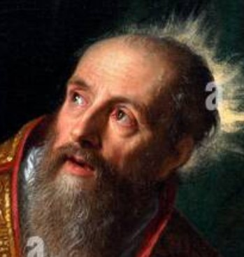
"Dieses Brot, das du auf dem Altar sehen kannst, geheiligt durch das Wort Gottes, ist der Leib Christi. Dieser Kelch, oder vielmehr was der Kelch enthält, geheiligt durch das Wort Gottes, ist das Blut Christi. Es war durch diese Dinge, dass der Herr Christus uns seinen Leib und sein Blut darstellen wollte, das er für unsere Sünden vergossen hat."
"Was du auf dem Altar sehen kannst, hast du letzte Nacht gesehen; aber was es war, was es bedeutete, welche große Realität es im Sakrament enthielt, hattest du noch nicht gehört. Was du also sehen kannst, ist Brot und ein Kelch; das ist es, was sogar deine Augen dir sagen; aber was dein Glaube zu verstehen bittet, ist Brot der Leib Christi."